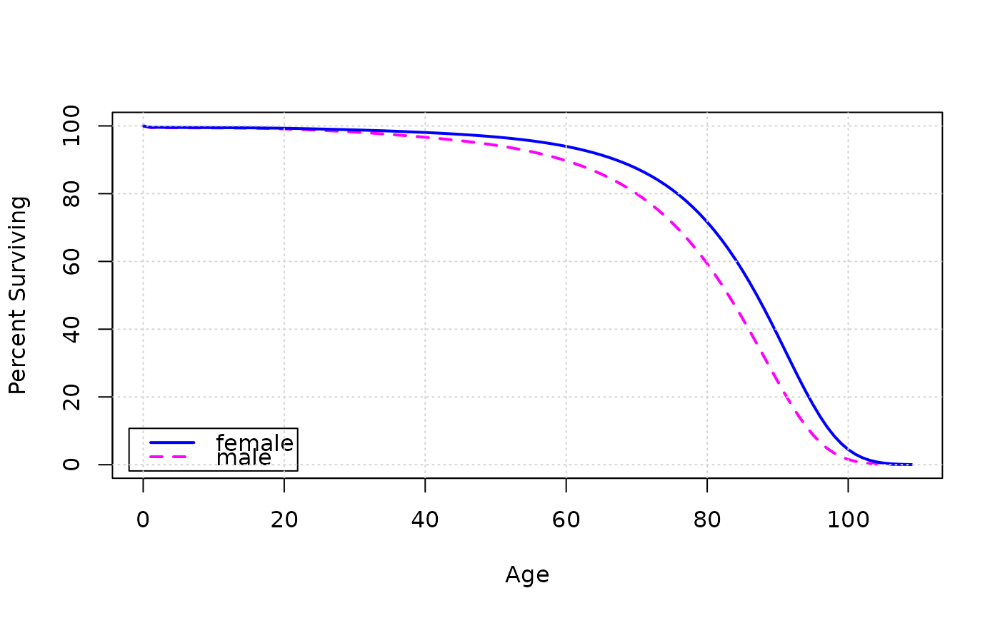

Construct a life table
lifetable.RdConstruct a life table starting with age-specific mortality rates
\(q\) (see mortalityRates). Both single-year and
grouped (e.g., 5-year) life tables are supported. Life tables begin
at age 0.
Usage
lifetable(
q,
start = 0:(n - 1),
end = start,
radix = 1e+05,
a0 = 0.7,
a1 = 0.6,
annual = TRUE
)Arguments
- q
age-specific mortality rates
- start
the age in years at the start of each age interval; if missing, then the default is single years from
0ton - 1, wherenis the number of intervals- end
the age in years at the end of each interval; the default is
start, which produces single-year intervals; if the last interval is open-ended thenend[n]can beInf- radix
size of synthetic cohort (default
100000)- a0
fraction of deaths subtracted in year 0 for computing person-years of life \(L_0\) (default
0.7)- a1
fraction of deaths subtracted in year 1 for \(L_1\) (default
0.6)- annual
if
TRUE(the default) input age-specific mortality rates (argumentq) are annual rates even if the age intervals aren't 1 year; output mortality ratesq[x]refer to the entire intervals
Value
lifeTable() returns a numeric matrix with rows
labeled by ages (or age intervals) and the following named columns,
where x is age at the start of each interval:
description
l[x]number alive at age
xd[x]number dying in the interval
p[x]conditional probability of surviving the interval
q[x]conditional probability of dying in the interval
L[x]person-years lived in the interval
T[x]person-years lived after age
xe[x]expectation of life at age
x
Details
The columns of the life table are computed from q
under the following assumptions:
Deaths evenly distributed through the year(s) in an interval (except in years 0 and 1).
Those surviving beyond the last interval in the table live on average
y[n]more years, wherey[n]is the length of the last interval in years; ify[n]is infinite, theny[n - 1]is used.
Author
John Fox jfox@mcmaster.ca
Examples
with(CanadaMortality,
lifetable(q.female, start=start, end=end))
#> l[x] d[x] p[x] q[x] L[x] T[x] e[x]
#> less than 1 year 100000 420 0.99580 0.00420 99706 8376981 83.769810
#> 1 - 4 years 99580 80 0.99920 0.00080 398160 8277275 83.121862
#> 5 - 9 years 99500 50 0.99950 0.00050 497375 7879115 79.187085
#> 10 - 14 years 99450 50 0.99950 0.00050 497125 7381740 74.225641
#> 15 - 19 years 99400 149 0.99850 0.00150 496625 6884615 69.261720
#> 20 - 24 years 99251 199 0.99800 0.00200 495760 6387990 64.361971
#> 25 - 29 years 99052 297 0.99700 0.00300 494515 5892230 59.486229
#> 30 - 34 years 98755 346 0.99650 0.00350 492910 5397715 54.657638
#> 35 - 39 years 98409 442 0.99551 0.00449 490940 4904805 49.841021
#> 40 - 44 years 97967 538 0.99451 0.00549 488490 4413865 45.054610
#> 45 - 49 years 97429 777 0.99203 0.00797 485205 3925375 40.289596
#> 50 - 54 years 96652 1107 0.98855 0.01145 480495 3440170 35.593366
#> 55 - 59 years 95545 1707 0.98213 0.01787 473455 2959675 30.976765
#> 60 - 64 years 93838 2598 0.97231 0.02769 462695 2486220 26.494810
#> 65 - 69 years 91240 3944 0.95677 0.04323 446340 2023525 22.178047
#> 70 - 74 years 87296 5900 0.93241 0.06759 421730 1577185 18.067094
#> 75 - 79 years 81396 9236 0.88653 0.11347 383890 1155455 14.195476
#> 80 - 84 years 72160 13872 0.80776 0.19224 326120 771565 10.692420
#> 85 - 89 years 58288 19431 0.66664 0.33336 242865 445445 7.642139
#> 90+ years 38857 24799 0.36179 0.63821 132290 202580 5.213475
(Lm <- lifetable(CanadaMortalitySingleYear$q.male))
#> l[x] d[x] p[x] q[x] L[x] T[x] e[x]
#> 0 years 100000 477 0.99523 0.00477 99666 7925115 79.251150
#> 1 year 99523 30 0.99970 0.00030 99505 7825449 78.629553
#> 2 years 99493 22 0.99978 0.00022 99482 7725944 77.653141
#> 3 years 99471 17 0.99983 0.00017 99463 7626462 76.670205
#> 4 years 99454 13 0.99987 0.00013 99448 7526999 75.683220
#> 5 years 99441 11 0.99989 0.00011 99436 7427551 74.693044
#> 6 years 99430 10 0.99990 0.00010 99425 7328115 73.701247
#> 7 years 99420 9 0.99991 0.00009 99416 7228690 72.708610
#> 8 years 99411 8 0.99992 0.00008 99407 7129274 71.715142
#> 9 years 99403 8 0.99992 0.00008 99399 7029867 70.720874
#> 10 years 99395 9 0.99991 0.00009 99391 6930468 69.726525
#> 11 years 99386 9 0.99991 0.00009 99382 6831077 68.732789
#> 12 years 99377 11 0.99989 0.00011 99372 6731695 67.738964
#> 13 years 99366 14 0.99986 0.00014 99359 6632323 66.746402
#> 14 years 99352 18 0.99982 0.00018 99343 6532964 65.755737
#> 15 years 99334 26 0.99974 0.00026 99321 6433621 64.767562
#> 16 years 99308 36 0.99964 0.00036 99290 6334300 63.784388
#> 17 years 99272 46 0.99954 0.00046 99249 6235010 62.807337
#> 18 years 99226 54 0.99946 0.00054 99199 6135761 61.836222
#> 19 years 99172 60 0.99939 0.00061 99142 6036562 60.869620
#> 20 years 99112 68 0.99931 0.00069 99078 5937420 59.906167
#> 21 years 99044 74 0.99925 0.00075 99007 5838342 58.946953
#> 22 years 98970 81 0.99918 0.00082 98929 5739335 57.990654
#> 23 years 98889 87 0.99912 0.00088 98845 5640406 57.037749
#> 24 years 98802 91 0.99908 0.00092 98757 5541561 56.087539
#> 25 years 98711 96 0.99903 0.00097 98663 5442804 55.138779
#> 26 years 98615 101 0.99898 0.00102 98565 5344141 54.191969
#> 27 years 98514 105 0.99893 0.00107 98461 5245576 53.247011
#> 28 years 98409 111 0.99887 0.00113 98353 5147115 52.303295
#> 29 years 98298 118 0.99880 0.00120 98239 5048762 51.361798
#> 30 years 98180 125 0.99873 0.00127 98118 4950523 50.422927
#> 31 years 98055 132 0.99865 0.00135 97989 4852405 49.486564
#> 32 years 97923 139 0.99858 0.00142 97853 4754416 48.552597
#> 33 years 97784 146 0.99851 0.00149 97711 4656563 47.620909
#> 34 years 97638 151 0.99845 0.00155 97562 4558852 46.691370
#> 35 years 97487 156 0.99840 0.00160 97409 4461290 45.762922
#> 36 years 97331 162 0.99834 0.00166 97250 4363881 44.835469
#> 37 years 97169 167 0.99828 0.00172 97085 4266631 43.909385
#> 38 years 97002 173 0.99822 0.00178 96916 4169546 42.984124
#> 39 years 96829 179 0.99815 0.00185 96739 4072630 42.060023
#> 40 years 96650 187 0.99807 0.00193 96557 3975891 41.136999
#> 41 years 96463 195 0.99798 0.00202 96366 3879334 40.215772
#> 42 years 96268 203 0.99789 0.00211 96166 3782968 39.296215
#> 43 years 96065 213 0.99778 0.00222 95958 3686802 38.378202
#> 44 years 95852 224 0.99766 0.00234 95740 3590844 37.462380
#> 45 years 95628 237 0.99752 0.00248 95509 3495104 36.548961
#> 46 years 95391 251 0.99737 0.00263 95266 3399595 35.638530
#> 47 years 95140 266 0.99720 0.00280 95007 3304329 34.731228
#> 48 years 94874 283 0.99702 0.00298 94733 3209322 33.827202
#> 49 years 94591 302 0.99681 0.00319 94440 3114589 32.926906
#> 50 years 94289 323 0.99657 0.00343 94127 3020149 32.030767
#> 51 years 93966 347 0.99631 0.00369 93793 2926022 31.139157
#> 52 years 93619 373 0.99602 0.00398 93433 2832229 30.252716
#> 53 years 93246 400 0.99571 0.00429 93046 2738796 29.371726
#> 54 years 92846 430 0.99537 0.00463 92631 2645750 28.496112
#> 55 years 92416 462 0.99500 0.00500 92185 2553119 27.626374
#> 56 years 91954 497 0.99459 0.00541 91705 2460934 26.762664
#> 57 years 91457 536 0.99414 0.00586 91189 2369229 25.905387
#> 58 years 90921 577 0.99365 0.00635 90632 2278040 25.055158
#> 59 years 90344 623 0.99310 0.00690 90032 2187408 24.211990
#> 60 years 89721 672 0.99251 0.00749 89385 2097376 23.376645
#> 61 years 89049 726 0.99185 0.00815 88686 2007991 22.549282
#> 62 years 88323 783 0.99113 0.00887 87931 1919305 21.730523
#> 63 years 87540 847 0.99033 0.00967 87117 1831374 20.920425
#> 64 years 86693 915 0.98945 0.01055 86236 1744257 20.119929
#> 65 years 85778 988 0.98848 0.01152 85284 1658021 19.329210
#> 66 years 84790 1068 0.98740 0.01260 84256 1572737 18.548614
#> 67 years 83722 1155 0.98621 0.01379 83145 1488481 17.778851
#> 68 years 82567 1248 0.98489 0.01511 81943 1405336 17.020553
#> 69 years 81319 1347 0.98343 0.01657 80645 1323393 16.274093
#> 70 years 79972 1455 0.98181 0.01819 79245 1242748 15.539789
#> 71 years 78517 1570 0.98000 0.02000 77732 1163503 14.818485
#> 72 years 76947 1694 0.97799 0.02201 76100 1085771 14.110635
#> 73 years 75253 1824 0.97576 0.02424 74341 1009671 13.417020
#> 74 years 73429 1963 0.97327 0.02673 72448 935330 12.737883
#> 75 years 71466 2108 0.97050 0.02950 70412 862882 12.074021
#> 76 years 69358 2261 0.96740 0.03260 68227 792470 11.425791
#> 77 years 67097 2420 0.96394 0.03606 65887 724243 10.793970
#> 78 years 64677 2583 0.96007 0.03993 63386 658356 10.179136
#> 79 years 62094 2749 0.95573 0.04427 60720 594970 9.581763
#> 80 years 59345 2915 0.95088 0.04912 57887 534250 9.002443
#> 81 years 56430 3079 0.94543 0.05457 54890 476363 8.441662
#> 82 years 53351 3237 0.93932 0.06068 51732 421473 7.900002
#> 83 years 50114 3386 0.93244 0.06756 48421 369741 7.377998
#> 84 years 46728 3518 0.92471 0.07529 44969 321320 6.876391
#> 85 years 43210 3629 0.91601 0.08399 41395 276351 6.395533
#> 86 years 39581 3713 0.90620 0.09380 37725 234956 5.936080
#> 87 years 35868 3761 0.89514 0.10486 33987 197231 5.498801
#> 88 years 32107 3768 0.88264 0.11736 30223 163244 5.084374
#> 89 years 28339 3726 0.86852 0.13148 26476 133021 4.693920
#> 90 years 24613 3629 0.85254 0.14746 22798 106545 4.328810
#> 91 years 20984 3463 0.83495 0.16505 19252 83747 3.990993
#> 92 years 17521 3221 0.81618 0.18382 15911 64495 3.681011
#> 93 years 14300 2913 0.79631 0.20369 12844 48584 3.397483
#> 94 years 11387 2557 0.77541 0.22459 10108 35740 3.138667
#> 95 years 8830 2188 0.75217 0.24783 7736 25632 2.902831
#> 96 years 6642 1793 0.73009 0.26991 5746 17896 2.694369
#> 97 years 4849 1419 0.70742 0.29258 4140 12150 2.505671
#> 98 years 3430 1083 0.68435 0.31565 2889 8010 2.335277
#> 99 years 2347 795 0.66112 0.33888 1949 5121 2.181934
#> 100 years 1552 562 0.63794 0.36206 1271 3172 2.043814
#> 101 years 990 381 0.61504 0.38496 799 1901 1.920202
#> 102 years 609 248 0.59262 0.40738 485 1102 1.809524
#> 103 years 361 155 0.57089 0.42911 284 617 1.709141
#> 104 years 206 93 0.55001 0.44999 160 333 1.616505
#> 105 years 113 53 0.53013 0.46987 86 173 1.530973
#> 106 years 60 29 0.51134 0.48866 45 87 1.450000
#> 107 years 31 16 0.49374 0.50626 23 42 1.354839
#> 108 years 15 8 0.47737 0.52263 11 19 1.266667
#> 109 years 7 4 0.46224 0.53776 5 8 1.142857
(Lf <- lifetable(CanadaMortalitySingleYear$q.female))
#> l[x] d[x] p[x] q[x] L[x] T[x] e[x]
#> 0 years 100000 406 0.99594 0.00406 99716 8378799 83.787990
#> 1 year 99594 23 0.99977 0.00023 99580 8279083 83.128331
#> 2 years 99571 17 0.99983 0.00017 99563 8179503 82.147443
#> 3 years 99554 14 0.99986 0.00014 99547 8079940 81.161380
#> 4 years 99540 11 0.99989 0.00011 99535 7980393 80.172725
#> 5 years 99529 10 0.99990 0.00010 99524 7880858 79.181525
#> 6 years 99519 9 0.99991 0.00009 99515 7781334 78.189431
#> 7 years 99510 8 0.99992 0.00008 99506 7681819 77.196453
#> 8 years 99502 8 0.99992 0.00008 99498 7582313 76.202619
#> 9 years 99494 8 0.99992 0.00008 99490 7482815 75.208706
#> 10 years 99486 8 0.99992 0.00008 99482 7383325 74.214714
#> 11 years 99478 9 0.99991 0.00009 99474 7283843 73.220642
#> 12 years 99469 10 0.99990 0.00010 99464 7184369 72.227217
#> 13 years 99459 12 0.99988 0.00012 99453 7084905 71.234428
#> 14 years 99447 14 0.99986 0.00014 99440 6985452 70.242964
#> 15 years 99433 18 0.99982 0.00018 99424 6886012 69.252783
#> 16 years 99415 22 0.99978 0.00022 99404 6786588 68.265232
#> 17 years 99393 26 0.99974 0.00026 99380 6687184 67.280231
#> 18 years 99367 30 0.99970 0.00030 99352 6587804 66.297704
#> 19 years 99337 34 0.99966 0.00034 99320 6488452 65.317576
#> 20 years 99303 37 0.99963 0.00037 99285 6389132 64.339768
#> 21 years 99266 41 0.99959 0.00041 99246 6289847 63.363559
#> 22 years 99225 43 0.99957 0.00043 99204 6190601 62.389529
#> 23 years 99182 46 0.99954 0.00046 99159 6091397 61.416356
#> 24 years 99136 48 0.99952 0.00048 99112 5992238 60.444622
#> 25 years 99088 49 0.99951 0.00049 99064 5893126 59.473660
#> 26 years 99039 51 0.99949 0.00051 99014 5794062 58.502832
#> 27 years 98988 52 0.99947 0.00053 98962 5695048 57.532711
#> 28 years 98936 55 0.99944 0.00056 98908 5596086 56.562687
#> 29 years 98881 58 0.99941 0.00059 98852 5497178 55.593875
#> 30 years 98823 61 0.99938 0.00062 98792 5398326 54.626210
#> 31 years 98762 64 0.99935 0.00065 98730 5299534 53.659646
#> 32 years 98698 68 0.99931 0.00069 98664 5200804 52.694117
#> 33 years 98630 71 0.99928 0.00072 98594 5102140 51.730102
#> 34 years 98559 75 0.99924 0.00076 98522 5003546 50.767013
#> 35 years 98484 78 0.99921 0.00079 98445 4905024 49.805288
#> 36 years 98406 82 0.99917 0.00083 98365 4806579 48.844369
#> 37 years 98324 86 0.99913 0.00087 98281 4708214 47.884687
#> 38 years 98238 89 0.99909 0.00091 98193 4609933 46.926169
#> 39 years 98149 94 0.99904 0.00096 98102 4511740 45.968273
#> 40 years 98055 99 0.99899 0.00101 98005 4413638 45.011861
#> 41 years 97956 104 0.99894 0.00106 97904 4315633 44.056852
#> 42 years 97852 111 0.99887 0.00113 97797 4217729 43.103146
#> 43 years 97741 117 0.99880 0.00120 97682 4119932 42.151523
#> 44 years 97624 124 0.99873 0.00127 97562 4022250 41.201446
#> 45 years 97500 133 0.99864 0.00136 97434 3924688 40.253210
#> 46 years 97367 141 0.99855 0.00145 97296 3827254 39.307507
#> 47 years 97226 152 0.99844 0.00156 97150 3729958 38.363792
#> 48 years 97074 163 0.99832 0.00168 96992 3632808 37.423079
#> 49 years 96911 175 0.99819 0.00181 96823 3535816 36.485187
#> 50 years 96736 189 0.99805 0.00195 96642 3438993 35.550292
#> 51 years 96547 204 0.99789 0.00211 96445 3342351 34.618901
#> 52 years 96343 221 0.99771 0.00229 96233 3245906 33.691145
#> 53 years 96122 239 0.99751 0.00249 96002 3149673 32.767452
#> 54 years 95883 259 0.99730 0.00270 95754 3053671 31.847888
#> 55 years 95624 281 0.99706 0.00294 95483 2957917 30.932789
#> 56 years 95343 305 0.99680 0.00320 95190 2862434 30.022487
#> 57 years 95038 331 0.99652 0.00348 94873 2767244 29.117237
#> 58 years 94707 360 0.99620 0.00380 94527 2672371 28.217249
#> 59 years 94347 392 0.99585 0.00415 94151 2577844 27.323010
#> 60 years 93955 427 0.99546 0.00454 93742 2483693 26.434921
#> 61 years 93528 465 0.99503 0.00497 93296 2389951 25.553321
#> 62 years 93063 507 0.99455 0.00545 92809 2296655 24.678497
#> 63 years 92556 553 0.99403 0.00597 92280 2203846 23.810947
#> 64 years 92003 604 0.99344 0.00656 91701 2111566 22.951056
#> 65 years 91399 659 0.99279 0.00721 91070 2019865 22.099421
#> 66 years 90740 720 0.99206 0.00794 90380 1928795 21.256282
#> 67 years 90020 788 0.99125 0.00875 89626 1838415 20.422295
#> 68 years 89232 861 0.99035 0.00965 88801 1748789 19.598227
#> 69 years 88371 942 0.98934 0.01066 87900 1659988 18.784307
#> 70 years 87429 1030 0.98822 0.01178 86914 1572088 17.981311
#> 71 years 86399 1127 0.98696 0.01304 85836 1485174 17.189713
#> 72 years 85272 1232 0.98555 0.01445 84656 1399338 16.410287
#> 73 years 84040 1347 0.98397 0.01603 83366 1314682 15.643527
#> 74 years 82693 1472 0.98220 0.01780 81957 1231316 14.890208
#> 75 years 81221 1607 0.98021 0.01979 80417 1149359 14.151008
#> 76 years 79614 1754 0.97797 0.02203 78737 1068942 13.426558
#> 77 years 77860 1911 0.97546 0.02454 76905 990205 12.717763
#> 78 years 75949 2079 0.97263 0.02737 74910 913300 12.025175
#> 79 years 73870 2258 0.96943 0.03057 72741 838390 11.349533
#> 80 years 71612 2447 0.96583 0.03417 70389 765649 10.691630
#> 81 years 69165 2645 0.96176 0.03824 67843 695260 10.052194
#> 82 years 66520 2850 0.95716 0.04284 65095 627417 9.432005
#> 83 years 63670 3059 0.95195 0.04805 62140 562322 8.831820
#> 84 years 60611 3270 0.94605 0.05395 58976 500182 8.252330
#> 85 years 57341 3477 0.93936 0.06064 55602 441206 7.694425
#> 86 years 53864 3676 0.93176 0.06824 52026 385604 7.158844
#> 87 years 50188 3858 0.92312 0.07688 48259 333578 6.646569
#> 88 years 46330 4017 0.91330 0.08670 44322 285319 6.158407
#> 89 years 42313 4142 0.90211 0.09789 40242 240997 5.695578
#> 90 years 38171 4223 0.88936 0.11064 36059 200755 5.259359
#> 91 years 33948 4238 0.87515 0.12485 31829 164696 4.851420
#> 92 years 29710 4167 0.85975 0.14025 27627 132867 4.472131
#> 93 years 25543 4006 0.84315 0.15685 23540 105240 4.120111
#> 94 years 21537 3761 0.82535 0.17465 19656 81700 3.793472
#> 95 years 17776 3503 0.80294 0.19706 16025 62044 3.490324
#> 96 years 14273 3105 0.78248 0.21752 12721 46019 3.224200
#> 97 years 11168 2669 0.76097 0.23903 9833 33298 2.981554
#> 98 years 8499 2222 0.73857 0.26143 7388 23465 2.760913
#> 99 years 6277 1786 0.71547 0.28453 5384 16077 2.561255
#> 100 years 4491 1384 0.69188 0.30812 3799 10693 2.380984
#> 101 years 3107 1031 0.66804 0.33196 2591 6894 2.218861
#> 102 years 2076 739 0.64418 0.35582 1707 4303 2.072736
#> 103 years 1337 507 0.62055 0.37945 1083 2596 1.941660
#> 104 years 830 334 0.59738 0.40262 663 1513 1.822892
#> 105 years 496 211 0.57489 0.42511 391 850 1.713710
#> 106 years 285 127 0.55328 0.44672 221 459 1.610526
#> 107 years 158 74 0.53268 0.46732 121 238 1.506329
#> 108 years 84 41 0.51324 0.48676 64 117 1.392857
#> 109 years 43 22 0.49504 0.50496 32 53 1.232558
plot(0:109, Lm[, "l[x]"]/1000, type="l", col="magenta",
lwd=2, lty=2, xlab="Age", ylab="Percent Surviving")
lines(0:109, Lf[, "l[x]"]/1000, type="l", col="blue",
lty=1, lwd=2)
legend("bottomleft", inset=0.02, legend=c("female", "male"),
lty=1:2, lwd=2, col=c("blue", "magenta"))
grid()
